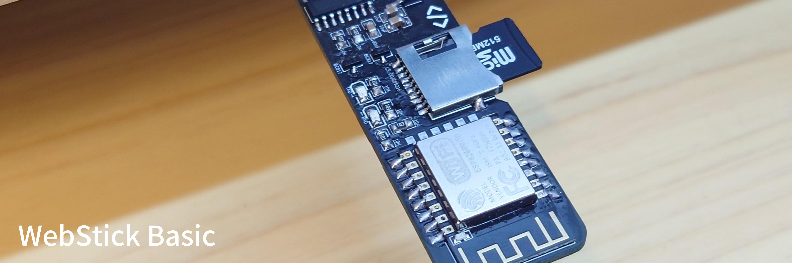

WebStick is a USB stick form factor web server powered by a ESP12E/F module.
The web content is serve over the SD card connected to the MCU via SPI link,
providing basic HTTP web server function with less than 2W of power usage.
If you are just hosting a web server for personal use with a few occasional guests,
you do not need a Raspberry Pi that draws 15W 24/7 just for this purpose.
Instead, a WebStick with ESP8266 is just enough to do the tasks.
With the help of CDN and Caching, even a 2W MCU running over WiFi
can provide relatively acceptable performance for basic HTTP web services.
| Item |
Properties |
|---|
| Power Requirement |
5V 1A |
| Actual Power Draw |
around 2 - 3W |
| Wireless Network Speed |
2 - 4 Mbps |
| Max SD card size |
4GB |
| SD card format |
FAT32 |
| Arduino IDE Support |
|
| Run PHP / nodejs |
|
| Max No. of Users |
~20 viewers per day |